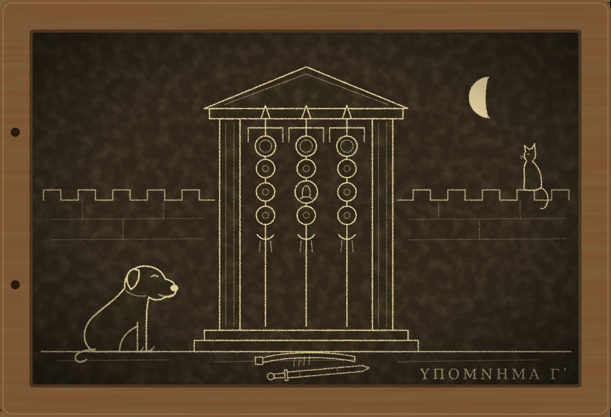

Гипомнема III Мёртвая присяга

I
Солдат клянётся реже всех в Риме. Торговец за год даёт десяток клятв, страж слов повторяет чужие каждый день, а солдату хватает одной: он присягает императору, и больше с него ничего не спрашивают до отставки или до смены императора, смотря что наступит раньше. В последние годы раньше наступает второе.
Присяга, как всякая клятва, говорит о настоящем. О будущем клясться нельзя, потому что будущего никто не знает, и солдат не обещает хранить верность. Он говорит: «Я человек такого-то Августа, и его враги мои враги». Пока это правда, он живёт. Что бывает, когда это перестаёт быть правдой, знает каждый новобранец, и на этом знании держатся легионы.
Трибун пришёл ко мне ночью, когда молодой луне шёл двенадцатый день и до следующей оставалось восемнадцать ночей. Считаю я их по привычке. Двенадцать лет назад я, страж слов, поклялся в том, что помнил, а память моя оказалась подменённой. По этой клятве казнили моего учителя. Я ждал смерти до новолуния, не дождался и был изгнан из сословия, а с тех пор живу под крышей в Субуре с молоссом Фероксом и египетским котом Пами, которые со мной разговаривают. В прошлом месяце мне пришлось поклясться во второй раз, и я опять дожил до луны. После этого обо мне заговорили. Изгнанный страж, чья клятва устояла, ценится в Риме выше любой рекомендации, и ко мне стали подниматься люди, которым нужна формула.
Этого гостя я по шагам не узнал. Он шёл по лестнице ровно, не отдыхая и не считая ступеней, и подошвы у него были подбиты гвоздями. На третьей ступени сверху, где с прошлого месяца стоит новая доска, он не замедлил шага.
Ферокс бросился к двери, как бросается ко всем. Человек на пороге сказал негромко:
— Сидеть.
Ферокс сел. За двенадцать лет он ни разу не сел по моей просьбе, и я был уверен, что он этого не умеет.
Гость был в тёмном плаще без знаков, но плащ не скрывал ни пояса, ни выправки. Он назвался Гаем Аттием Приском, трибуном четвёртой преторианской когорты, оглядел комнату так, как оглядывают место для лагеря, и сел на табурет, не дожидаясь приглашения.
— Мне сказали, что ты разбираешь формулы.
— Составляю. Разбирать дешевле.
— Тогда разбери одну.
Он произнёс её ровно, как произносят то, что повторяли строем:
— «Мы, солдаты преторианских когорт, люди Августов Пупиена и Бальбина и Цезаря Гордиана. Их враги наши враги. Клянёмся в этом перед знамёнами».
— Где это было сказано?
— Под Аквилеей, в поле, на третий день после смерти Максимина. Нас построили и привели к присяге.
— Кто принимал?
— Посланный от сената.
— Жрец был?
— Гаруспик Второго легиона.
— А стражи слов?
Он усмехнулся.
— До ближайшего стража слов было двенадцать дней пути.
Клятва, которую никто не хранит, в нашем ремесле называется разговором. Десять когорт сказали несколько слов в поле, и во всей империи не было двух человек, обязанных эти слова помнить. Я понял, о чём меня спрашивают. Понял я и то, зачем трибун гвардии задаёт такой вопрос ночью, в плаще без знаков, человеку, которого никто не станет слушать.
— Спроси коллегию, — сказал я.
— Коллегия ответит после луны. Мне нужно раньше.
— Почему раньше?
— Потому что после луны Август Пупиен приведёт гвардию к присяге заново, уже как положено: с жрецом и двумя стражами слов. В лагере об этом объявили вчера.
Я молчал довольно долго. Ферокс по-прежнему сидел, и вид у него был гордый.
— Ты не ответил, — сказал Приск.
— Я изгнан из сословия. Моё мнение ничего не стоит.
— Стоит. Мне сказали, что ты знаешь о клятвах больше, чем говоришь.
— Кто сказал?
— Тот, кто дал мне первое мнение. Твоё было бы вторым.
Он положил на стол золотой, встал и потрепал Ферокса по загривку.
— Молосс. У нас таких держат при воротах. Хороший пёс, только распущенный.
Когда его шаги стихли внизу, Пами спустился с балки и обнюхал табурет.
— Он не спросил, сколько стоит ответ, — заметил кот. — Так делают те, кто уже купил.
Монету я не взял и не вернул. Она пролежала на столе до конца этой истории, и Пами катал её лапой, когда ему было скучно. В ту ночь я думал, не пойти ли мне утром на Палатин и не сказать ли там, что преторианский трибун интересуется прорехами в присяге. Дальше первого караула меня бы не пустили, а караул на Палатине несут преторианцы.
II
Через два дня кончались Капитолийские игры. Их устраивают раз в четыре года, в начале лета, на стадионе Домициана на Марсовом поле, и состязаются там не только бегуны и борцы, но и поэты с музыкантами, так что Рим на несколько дней делается похож на греческий город и очень этим гордится. В тот год народу собралось особенно много. После весны, когда на улицах дрались с преторианцами и горели целые кварталы, людям хотелось посмотреть на состязание, где проигравшего не убивают.
Я на игры не ходил. То, что случилось в тот день, я знаю так же, как знает весь Рим, с чужих слов, и записываю только то, в чём сходятся все рассказчики. Под конец игр, когда и народ, и половина дворцовой прислуги были на Марсовом поле, преторианцы поднялись на Палатин. Августы узнали об этом раньше, чем гвардия дошла до дверей. Пупиен хотел послать за своими германцами, которые стояли в городе и успели бы. Бальбин не позволил: он решил, что германцы нужны Пупиену не против гвардии, а против него самого. Пока они спорили, спорить стало не о чем.
Их вывели из дворца раздетыми и погнали через город к лагерю. Дорога эта идёт через Субуру, и остальное я видел сам, из окна. По Аргилету вели двух пожилых людей, и понять, который из них который, было так же трудно, как месяц назад в здравицах. Солдаты шли быстро и оглядывались. Лавки закрывались перед ними одна за другой, как закрываются перед грозой. Ферокс стоял рядом со мной, положив лапы на подоконник, и на этот раз вниз не просился.
Потом впереди закричали, что с Палатина идут германцы, и шествие свернуло за угол. Говорят, до лагеря императоров не довели. Говорят также, что германцы, увидев, что защищать больше некого, драться за мёртвых не стали и вернулись к себе.
К вечеру у Рима был новый Август, Гордиан, тринадцати лет от роду, внук одного и племянник другого из тех двух Гордианов, которых город оплакал весной. Пами выслушал эту новость с балки и сказал, что двух вожаков в одном дворе не бывает и что люди узнают это каждый раз заново.
С того вечера Рим стал считать ночи. До луны их оставалось шестнадцать. Гвардия присягала этим двоим, гвардия их убила, и всякий лавочник в Субуре хотел знать, что скажут боги. Одни говорили, что к луне лагерь опустеет. Другие напоминали, что присяга умирает вместе с тем, кому её давали, и что убивать императоров в Риме потому и принято наверняка. На третьих смотрели косо, потому что третьи принимали ставки.
Я знал то, чего не знали ни первые, ни вторые. Солдат, который сказал под Аквилеей «я человек Пупиена» и сам в это верил, не солгал, что бы он ни сделал потом. Боги спрашивают с человека за то, во что он верил, когда открывал рот, и больше ни за что. Мысль эта неприятнее, чем кажется. Из неё следует, что легионы держит в повиновении не кара, а слух о каре, и что слух этот до сих пор никто не проверял, потому что проверять его приходится собственной жизнью.
О трибуне Приске я старался не думать. Второго мнения он от меня не получил, а первого ему, как видно, хватило.
III
Никанор пришёл на пятый день после гибели Августов, среди бела дня и не скрываясь, чего раньше себе не позволял. Никанор мой бывший ученик, ему тридцать два, и он страж слов в Юлиевой базилике. В прошлом месяце он хранил мою клятву, получил за это порицание от коллегии и с тех пор, как видно, решил, что терять ему нечего.
— В лагере умер центурион, — сказал он. — Луций Статорий Фронтон, четвёртая когорта. Вчера утром его нашли на постели, без единой раны. До луны одиннадцать ночей.
Остальное он изложил по порядку, как его учили. Лагерь принял эту смерть за первую кару. Раз центурион умер до луны, значит, присяга кусает и мёртвая, и к новолунию умрут все, кто был на Палатине. За ночь из лагеря ушло человек сорок, остальные сидят по баракам и считают. Префект послал в коллегию спросить, переживает ли присяга того, кому её давали. Коллегия заседала полдня и разделилась. Старшие считают, что не переживает. Младшие говорят, что два Августа, убитые разом своей же охраной, случай небывалый и что боги могут посмотреть на него иначе.
— А ты как считаешь?
— Меня не спрашивали, — сказал Никанор.
— Зачем же ты пришёл ко мне?
— Трибун четвёртой когорты не захотел ждать коллегию и потребовал тебя. По имени. Он сказал префекту, что в Риме есть человек, чья клятва недавно устояла на глазах у всего города, и что солдаты поверят ему скорее, чем старикам из базилики. Префект согласился. Мне велено привести тебя и быть при тебе.
— Трибуна зовут Приск?
— Ты его знаешь?
— Он заходил посоветоваться.
Больше я ничего не добавил. Ученику не обязательно знать всё, что знает учитель, особенно если ученик честен, а знание такого рода, что с ним неудобно стоять перед префектом.
Лагерь преторианцев лежит за городом, сразу за Виминальскими воротами. Его поставил Сеян при Тиберии, обнёс каменной стеной, и с тех пор Рим живёт рядом с крепостью, которая построена не против врага. Весной горожане пытались взять её приступом, и следы той осады на стенах ещё не заделали. У ворот на цепях сидели два молосса. Ферокс поздоровался с ними как с роднёй, и часовые, глядя на него, впервые за день заулыбались.
Внутри было тихо, как не бывает в лагере. Солдаты сидели у дверей бараков по двое и по трое и ничего не делали. Кое-кто смотрел на небо, хотя луны днём не видно. У маленького алтаря возле перекрёстка жгли ладан, и очередь к нему стояла длиннее, чем к хлебу. Один солдат, совсем молодой, поднялся навстречу Никанору: тогу и походку стража слов в Риме узнают издалека.
— Страж, сколько нам осталось?
— Одиннадцать ночей до луны, — ответил Никанор. — Как и всем.
Приск ждал нас у барака четвёртой когорты, на этот раз в панцире и при мече. Меня он встретил как человека, которого видит впервые, а Фероксу сказал «сидеть», и Ферокс сел.
Центурион в лагере живёт в конце барака своей центурии, в двух комнатах, и это единственное место, где он бывает один. Тело унесли и на рассвете сожгли за лагерем: держать у себя покаранного никто не хотел. Постель была уже застелена.
— Мне нужно, чтобы ты вышел к когорте и сказал, что это не кара, — сказал Приск. — Сегодня.
— А если кара?
— Тогда ты скажешь это мне одному.
Никанор при этих словах посмотрел в стену, как смотрят стражи, когда при них говорят то, чего лучше не запоминать.
— Сначала я посмотрю комнату, — сказал я. — И поговорю с теми, кто его нашёл.
IV
Фронтона нашёл его раб, мальчик лет пятнадцати по имени Эрот. Я попросил Приска выйти, объяснив, что раб при трибуне скажет то, что хочет слышать трибун. Приск вышел, но дверь оставил открытой.
— Как он лежал?
— На спине, господин. Руки вдоль тела, как на смотру. Он так никогда не спал, он спал на боку. И волосы у него были мокрые. Подушка тоже. Я подумал, что он вспотел перед смертью.
— А таз?
Мальчик посмотрел под кровать, где стоял медный таз для умывания.
— С вечера я налил его полный, чтобы господин умылся на рассвете. Утром он был пустой и стоял не там, где я его оставил. А пол у двери был сырой.
— Вечером к нему кто-нибудь приходил?
Эрот посмотрел на открытую дверь и ничего не ответил. Клясться раб не может, поэтому всё, что он скажет, у него потом спросят ещё раз, по-другому, и мальчик знал это не хуже меня.
— Я не спрашиваю, кто, — сказал я. — Я спрашиваю, сколько чаш ты вымыл утром.
— Две, господин.
Ферокс тем временем обнюхал постель, потом таз, потом долго стоял над половицами у двери.
— Здесь пахнет мокрым человеком, — сказал он. — И ещё тем, от кого хочется сесть.
Я не переспросил. Никанор стоял рядом и давно перестал спрашивать, с кем я разговариваю: за месяц он привык к этому, как привыкают к хромоте учителя.
Когорту построили на площадке перед святилищем знамён. Я никогда не говорил перед таким числом людей, и все они были при оружии. Стражей слов учат говорить так, чтобы каждое слово было слышно в базилике при четырёх судах сразу, и этой выучки хватило.
— Присяга умирает вместе с тем, кому её давали, — сказал я. — Это не мнение, это вы знаете сами. Многие из вас весной стояли под Аквилеей. Максимин был вашим императором, и вы были его людьми. Его убили солдаты Второго Парфянского легиона, и кое-кто из стоящих здесь им в этом не мешал. С того дня прошло две луны. Назовите мне человека, который за это умер.
Когорта молчала.
— Центурион Фронтон умер через три дня после Августов. В тот час клятвы уже не было, потому что не было тех, кому её давали. Боги не взыскивают по клятве, которой нет. Это не кара.
По рядам прошёл выдох, какой бывает, когда когорте разрешают стоять вольно. Потом из задней шеренги спросили:
— Тогда от чего он умер?
— Этого я пока не знаю. Но теперь об этом можно спрашивать у людей, а не у богов.
Я сказал им правду, только не всю. Настоящая причина, по которой им нечего бояться луны, совсем другая, и её я не назову ни перед когортой, ни перед коллегией.
Приск подошёл ко мне, когда строй распустили.
— Хорошо сказано. Последнего можно было не говорить.
— Меня спросили.
— Солдаты спрашивают о многом. Отвечать не обязательно. Он пил, страж. У пьющих останавливается сердце.
— Сердце не выливает таз, — сказал я.
Он посмотрел на меня внимательно и без злобы, как смотрят на местность, которая оказалась хуже, чем на карте, и отошёл.
Перед уходом меня остановил у барака опцион Фронтона, седой солдат с перебитым носом.
— Ты сказал, что теперь можно спрашивать у людей, — проговорил он, глядя мимо. — Так спроси. Центурион весь прошлый месяц ходил по вечерам в город по поручению трибунов. К кому, не говорил. А после Палатина не пил со всеми и два раза сказал при мне, что надо идти к префекту, пока не поздно.
— С чем идти?
— Этого он не сказал. Не успел.
Из лагеря я уносил мокрые волосы, пустой таз, две чаши и слова пса о человеке, от которого хочется сесть. Свидетелей у меня было, как обычно, двое: раб, который не может клясться, и пёс, которого не станут слушать.
V
Назавтра Никанор пришёл снова, и вид у него был такой, будто ему поручили нести по Форуму полную амфору без крышки.
Префект решил не ждать луны. Гвардию приведут к присяге новому Августу через два дня, за восемь ночей до новолуния, и на этот раз по всем правилам: в святилище знамён, при жреце и при двух стражах слов. Стражей солдаты выбрали сами. Они потребовали тех двоих, при которых в прошлом месяце устояла клятва изгнанного, рассудив, что у таких стражей лёгкая рука. Коллегия не возражала: в лагерь, где неделю назад убили двух Августов, она охотно отпустила Никанора и Диодора, которых ей жаль меньше остальных.
— Формулу префект велел составить нам, — сказал Никанор. — Я никогда не составлял формул, учитель. Я их только храню.
— Зато я составлял. Приходи завтра вместе с Диодором.
Формула присяги короткая, потому что десять тысяч человек должны повторить её без ошибки. В ней назван император, сказано, чей ты человек, и больше обычно ничего. Я сидел над ней до ночи и думал об одном лишнем предложении.
После Палатина каждый в лагере смотрит на соседа. Люди, которые вместе убили двух императоров, больше всего на свете хотят знать, что друг друга они убивать не станут. Если вписать в присягу слова о том, что на клянущемся нет смерти товарища, солдаты примут их как подарок, префект как успокоительное, а для одного человека в лагере эти слова станут ложью под клятвой. Присягу нельзя обойти, как обходят обычную клятву. От обычной клятвы можно отказаться, и это не запрещено. От присяги императору отказывается только враг императора.
К полуночи я произнёс формулу вслух, как произношу всё, что собираюсь отдать в чужую память:
— «Я человек Императора Цезаря Марка Антония Гордиана Августа. Его враги мои враги. На моих руках нет крови товарища по лагерю. Клянусь в этом перед знамёнами».
Ферокс спал и во сне перебирал лапами. Пами лежал на столе, положив лапу на золотой трибуна, и слушал с закрытыми глазами.
— «Крови», — сказал он.
— Что «крови»?
— Ты сказал «нет крови». Тот человек утопил его в тазу. Крови не было.
Я посидел немного молча. Двадцать лет я ловил людей на таких словах, ещё двенадцать учил других в них не попадаться, и поправил меня кот.
— «Я не отнимал жизни у товарища по лагерю», — сказал я.
— Уже лучше. А если он считает, что отнял не он, а вода?
Этот вопрос был умнее, чем полагается коту. Боги карают того, кто лжёт, а человек, который сумел бы всерьёз поверить, что центуриона убила вода, поклялся бы и дожил до луны. Мне ли этого не знать.
— Те, кто топит центурионов в тазу и потом укладывает их как на смотру, так себя обманывать не умеют, — ответил я. — Для этого надо быть хуже или лучше.
— Рыба, — сказал Пами. — За «кровь».
Наутро пришли Никанор и Диодор. Я произнёс формулу один раз, они повторили её по очереди, и с этой минуты она перестала быть моей. Слово, которое помнят два стража, уже нельзя взять назад, и на этом стоит всё наше ремесло.
— Третье предложение новое, — заметил Диодор. Он молод и ещё любопытен.
— Новое. Скажите префекту, что оно для спокойствия лагеря, и это будет правда. А когда офицеры начнут клясться по одному, слушайте каждого так, как слушали бы менялу, который клянётся, что вернул вклад. Все четыре предложения. Особенно в четвёртой когорте.
Никанор посмотрел на меня и ни о чём не спросил. Он хороший страж: он понимает, какие слова лучше услышать при свидетелях.
VI
Префект принял формулу целиком. Накануне присяги, на вечернем построении, Никанор произнёс её перед всеми десятью когортами, чтобы к утру солдаты знали слова. На третьем предложении по рядам прошёл гул, и гул этот был одобрительный. Людям, которые неделю смотрели друг на друга и на небо, дали слова, после которых можно повернуться к соседу спиной.
Меня оставили ночевать в лагере, чтобы утром я был под рукой, и поселили в комнатах Фронтона: других свободных не нашлось, а желающих спать на постели покойника в когорте не было. Таз по-прежнему стоял под кроватью. Ферокс лёг у двери, как ложится дома, и я подумал, что молосс поперёк порога всё же лучше, чем ничего.
Приск пришёл после второй стражи. Ферокс вскочил ему навстречу.
— Лежать, — сказал трибун.
Ферокс лёг и застучал хвостом по половицам. Приск перешагнул через него, притворил дверь и сел на сундук Фронтона. Меч был при нём.
— Третье предложение твоё.
— Формула принадлежит тем, кто её хранит.
— Убери его. До рассвета ещё есть время.
— Времени нет с вечера, — сказал я. — Это предложение слышали два стража слов, префект и десять когорт. Меня убрать можно, его уже нельзя.
Он посмотрел под кровать, туда, где стоял таз, и я понял, что он прикидывает первую половину моего ответа. Пёс мой лежал, где ему велели, и смотрел на трибуна с тем же обожанием, с каким смотрит на водоноса. За двенадцать лет я ни разу не пожалел, что завёл собаку, которая любит всех, и в ту ночь пожалел впервые.
— И ещё одно, — сказал я. — Позавчера я по твоей просьбе объяснил когорте, что смерть в этом лагере не кара. Если утром меня найдут на этой постели с мокрыми волосами, они уже не поднимут глаза к небу. Они спросят у людей. Ты сам просил меня научить их этому.
Приск помолчал, потом усмехнулся, и рука его легла на колено, далеко от меча.
— Меня предупреждали, что с тобой так и будет. Что ты ответишь на вопрос, которого тебе не задавали.
— Кто предупреждал?
— Тот, кто дал первое мнение.
— Зачем же ты тогда приходил ко мне за вторым?
— Он сам велел сходить. Сказал: спроси изгнанного стража и посмотри, что он сделает. Если начнёт спорить, значит, я ошибся и присяга вас держит. Если промолчит, значит, я прав.
Я промолчал тогда, в Субуре, и промолчал теперь. Вторым мнением, за которым ко мне приходили, было моё молчание. Я дал его бесплатно, и через два дня под моим окном провели двух стариков.
— Фронтон собирался к префекту, — сказал я наконец.
— Фронтон носил наши вопросы этому человеку и его ответы нам. После Палатина он испугался и решил купить себе жизнь, назвав его новому двору. А вместе с ним назвал бы и тех, кто его посылал. — Приск поднялся. — Ты сказал когорте, что присяга умерла вместе с Августами. Тот человек сказал нам, что она и не рождалась. Разница между вами в один месяц, страж.
На это у меня ответа не нашлось, и он его не ждал.
— Утром я произнесу то, что смогу произнести, — сказал он у двери, перешагнул через Ферокса и бросил через плечо: — Вольно.
Ферокс встал, подошёл ко мне и ткнулся носом в ладонь, ожидая, что его похвалят.
— Ты лежал, — сказал я.
— Он хорошо говорит, — ответил Ферокс виновато. — Когда он говорит, понятно, что делать.
Двенадцать лет я не говорил своему псу, что делать, и считал это уважением. Похоже, он всё это время считал иначе. До рассвета я просидел на сундуке, на постель так и не лёг и несколько раз проверил, пуст ли таз.
VII
Нового Августа на присягу не привезли: тринадцатилетних в этот лагерь пока не возят. Его изображение укрепили на знамёнах, на месте двух прежних. Перед святилищем встали жрец и префект, по сторонам Никанор и Диодор, сложив руки, как нас учили, а за ними десять когорт в строю. Я стоял сбоку, у стены. Ферокса я оставил у ворот, с двумя лагерными молоссами, и на этот раз не потому, что он мог испортить дело любовью.
Офицеры клянутся по одному, солдаты после них хором. Трибун выходит к знамёнам, называет себя и произносит формулу, а стражи слов слушают. Трое первых сказали все четыре предложения ровно, как на учении.
Приск вышел четвёртым. Голос у него был тот самый, от которого хочется сесть.
— Я, Гай Аттий Приск, человек Императора Цезаря Марка Антония Гордиана Августа. Его враги мои враги. Клянусь в этом перед знамёнами.
Он сказал это без единой заминки, с теми же остановками, что и трое до него. Жрец кивнул. Пятый трибун уже сделал шаг вперёд. Ни один человек в строю ничего не заметил, и я не уверен, что заметил бы сам, если бы не ждал.
— Трибун Приск произнёс три предложения, — сказал Никанор.
— Три, — подтвердил Диодор.
Никанор прикрыл глаза и повторил сказанное голосом Приска, с его остановками и его дыханием. Пропуск стал слышен всем, как слышна ступень, которой не оказалось под ногой.
— Оговорился, — сказал префект. — Повтори целиком.
Приск посмотрел на знамёна, потом на свою когорту, которая стояла ближе всех.
— От клятвы можно отказаться. Это не запрещено.
— От клятвы можно, — ответил префект. — Ты стоишь перед присягой.
Тогда Приск повернулся ко мне. Говорил он негромко, но рядом стояли два стража слов, а при них тихо говорить бесполезно.
— Тот человек говорил, что ты один в Риме знаешь, за что на самом деле карают боги. Скажи мне, страж: если я произнесу третье предложение, я доживу до луны?
За двенадцать лет меня ни разу не спросили об этом вслух. Ответ я знал точно. Человек, который помнит свои руки на чужом затылке, не может поклясться в обратном и верить своим словам.
— Нет, — сказал я. — Не доживёшь.
Он кивнул, как кивают, выслушав донесение. Потом расстегнул пояс с мечом и положил его на землю перед знамёнами. Солдат без пояса уже не солдат, и в лагере это понимают без формул.
— Тогда я не человек этого императора, — сказал он.
Первым из строя вышел седой опцион с перебитым носом, за ним ещё четверо из центурии Фронтона. Приск не сопротивлялся. Присяга пошла дальше, и остальные шесть трибунов произносили третье предложение громче прочих.
Префекту Приск рассказал всё в тот же день, и Никанор, которого позвали слушать, вечером принёс мне его рассказ слово в слово. Фронтона он напоил, дождался, пока тот отяжелеет, и держал лицом в тазу, а потом уложил на постель так, как по его понятиям должен лежать центурион. Выдавать эту смерть за кару он не собирался. Лагерь сделал это за него, и тогда ему понадобился человек, который скажет солдатам, что боги тут ни при чём.
О том, кто дал первое мнение, он знал немного. Впервые он увидел этого человека весной под Аквилеей, в палатке посланного от сената: тот состоял при посланном по части формул и сам посоветовал не ждать из Рима стражей слов, раз войско стоит без императора. В Риме они виделись дважды, ночью, через Фронтона. Лицо обыкновенное. Сидит, сложив руки на коленях, ничего не повторяет дважды. Обо мне говорил как о человеке, которого знает давно.
— Учитель, — спросил Никанор, закончив. — Что он имел в виду у знамён? За что на самом деле карают боги?
— Он имел в виду, что я дважды клялся и дважды дожил до луны.
Никанор принял этот ответ так, как принимают слова, которые придётся помнить, и больше не спрашивал.
До луны Приск не дожил, и боги тут действительно были ни при чём: с убийцей своего центуриона когорта разобралась раньше, чем префект придумал, как его судить. Когда над Капитолием показался серп, в лагере были живы все, кто поднимался на Палатин. Рим убедился ещё раз, что присяга умирает вместе с императором, и сделал из этого тот вывод, какой делает всегда.
У мальчика на Палатине теперь есть присяга, которую кто-то помнит, первая такая за весь этот год. Помнят её Никанор и Диодор. Я знаю, что бывает в последнее время со стражами, которые помнят дорогие клятвы, и Никанору я это сказал. Он ответил, что учился у двоих и оба его учителя не умели вовремя отойти в сторону.
Дома Пами получил рыбу за «кровь». Фероксу я сказал «сидеть», стараясь говорить так, как говорят в лагере. Он посмотрел на меня с интересом, завилял хвостом и остался стоять. Золотой трибуна по-прежнему лежит на столе, и Пами считает его своим.
На табличке «Чужие кары» я записал седьмое дело: Фронтон, центурион, утоплен в собственном тазу, за кару приняли сами. Ниже, под прежними приметами человека со сложенными руками, добавил две новые: «Весной был под Аквилеей при посланном от сената. Знает меня давно».
Ещё одну строку я записал отдельно, для себя: «Молчание тоже слышат». Стражей слов учат, что существует только произнесённое, и мне понадобилось без малого пятьдесят лет, чтобы узнать, что это не так.